Нажмите, чтобы увидеть перевод
Сегодня
Немного каждый день
Выберите набор и начните тренировку.
Карточки
Новые
Тест
Выберите перевод
Быстрый справочник
Грамматика A1
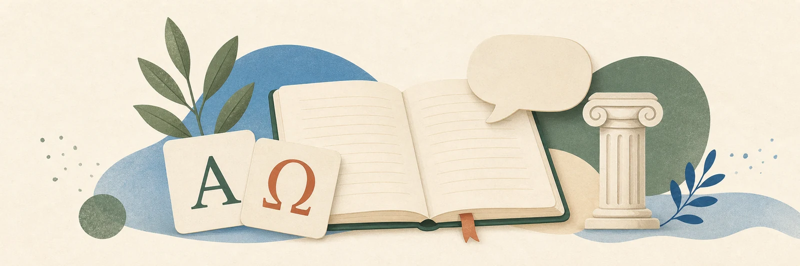
Все правила под рукой
Ищите по-русски или по-гречески. Темы расположены от основы к практическим ситуациям.
01
Основа
Род и артикли
У существительного в греческом есть род. Учите слово сразу с артиклем: он помогает выбрать окончания прилагательных и местоимений.
Мужской
οчасто -ος, -ας, -ης
ο φίλος — другЖенский
ηчасто -α, -η
η χώρα — странаСредний
τοчасто -ο, -ι, -μα
το παιδί — ребёнокОдин и несколько
Именительныйένας · μία · έναодин · одна · одно
Винительныйέναν · μία · έναодного · одну · одно
Именительный и винительныйτρεις · τρεις · τρίαтри: муж. · жен. · ср.
Форма числительного согласуется с родом: έναν αναπτήρα, μία γυναίκα, ένα πράγμα; τρεις άντρες, τρεις γυναίκες, τρία παιδιά.
Склонение существительных
| Род | Число и падеж | Артикль | Примеры |
|---|---|---|---|
| Мужской | ед., им. | ο | ο λαός · ο ναύτης · ο άντρας |
| ед., вин. | τον | τον λαό · τον ναύτη · τον άντρα | |
| мн., им. | οι | οι λαοί · οι ναύτες · οι άντρες | |
| мн., вин. | τους | τους λαούς · τους ναύτες · τους άντρες | |
| Женский | ед., им. | η | η γυναίκα · η κόρη · η δασκάλα |
| ед., вин. | τη(ν) | τη γυναίκα · την κόρη · τη δασκάλα | |
| мн., им. | οι | οι γυναίκες · οι κόρες · οι δασκάλες | |
| мн., вин. | τις | τις γυναίκες · τις κόρες · τις δασκάλες | |
| Средний | ед., им. | το | το νερό · το παιδί · το μάθημα |
| ед., вин. | το | το νερό · το παιδί · το μάθημα | |
| мн., им. | τα | τα νερά · τα παιδιά · τα μαθήματα | |
| мн., вин. | τα | τα νερά · τα παιδιά · τα μαθήματα |
Прилагательное склоняется вместе с существительным: ο μεγάλος άντρας → τον μεγάλο άντρα → οι μεγάλοι άντρες → τους μεγάλους άντρες.
Учитель
ο δάσκαλος → τον δάσκαλο → οι δάσκαλοι → τους δασκάλουςУчительница
η δασκάλα → τη δασκάλα → οι δασκάλες → τις δασκάλεςКакой?
ποιος άντρας · ποια γυναίκα · ποιο πράγμαВо множественном числе: ποιοι άντρες · ποιες γυναίκες · ποια πράγματα.
Особенность слова «молоко»
το γάλαмолоко — обычно неисчисляемое, единственное число
τα γάλαταразные виды, упаковки или порции молока
У среднего рода именительный и винительный совпадают. У γάλα множественное образуется не как простое -α, а с расширением основы: γάλα → γάλατα. В обычной фразе «я пью молоко» используется единственное: Πίνω γάλα.
ПримерΟ Γιώργος, η Μαρία, το γράμμα.
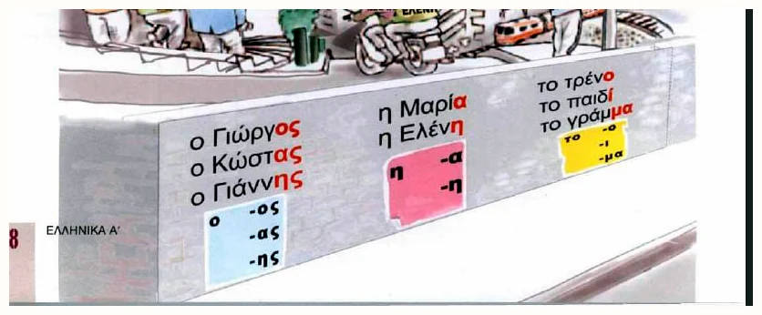
02
Кто и чей
Личные и притяжательные местоимения
Личное местоимение часто опускается: окончание глагола уже показывает лицо. Притяжательное ставится после существительного с артиклем.
εγώ — яμου — мой / моя / моёεσύ — тыσου — твойαυτός / αυτή / αυτότου / της / του — его / еёεμείς — мыμας — нашεσείς — выσας — вашαυτοί / αυτές / αυτάτους — их
ПримерΑυτό είναι το σπίτι μου.Это мой дом.
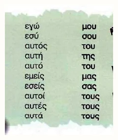
03
Главный глагол
Είμαι — быть
Используется, чтобы назвать себя, профессию, национальность, состояние или происхождение. В русском настоящего времени «есть» обычно нет, а в греческом форма обязательна.
εγώ είμαιεσύ είσαιαυτός / αυτή / αυτό είναιεμείς είμαστεεσείς είστεαυτοί / αυτές / αυτά είναι
ПримерыΕίμαι από τη Ρωσία. Είμαι γιατρός.Я из России. Я врач.
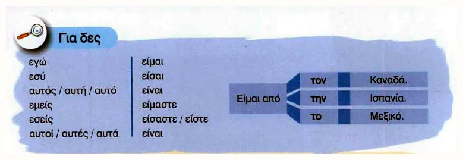
04
Знакомство
Как спросить имя
Форма вопросительного слова зависит от рода человека или предмета. В разговоре имя спрашивают конструкцией Πώς σε λένε;.
Ποιος είναι αυτός;Кто он?
Ποια είναι αυτή;Кто она?
Ποιο είναι αυτό το παιδί;Кто этот ребёнок?
Πώς σε λένε; — Με λένε Μαρία.Как тебя зовут? — Меня зовут Мария.
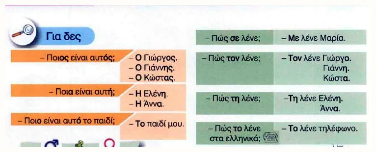
05
Настоящее время
Типы глаголов A1, B1, B2
Тип определяется ударением и окончаниями. В приложении тип указан на каждой карточке спряжения.
A1 · γράφω
-ω, -εις, -ει, -ουμε, -ετε, -ουνУдарение не на последнем слоге.
B1 · μιλάω / μιλώ
-άω, -άς, -άει, -άμε, -άτε, -άνεРазговорная модель на -άω.
B2 · οδηγώ
-ώ, -είς, -εί, -ούμε, -είτε, -ούνУдарение на окончании.
ПримерΓράφω, μιλάς, οδηγεί, μπορούμε.
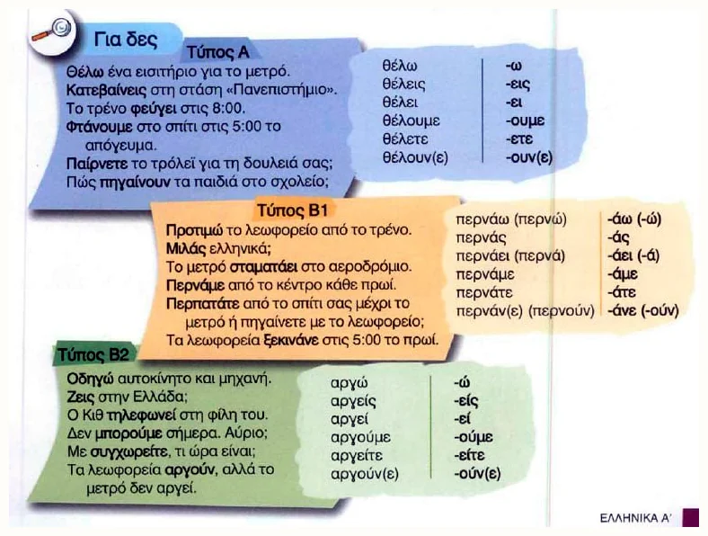
06
Винительный падеж
Артикли после предлогов и конечная ν
После σε, από, για, με обычно нужен винительный падеж: τον, την, το. Предлог σε сливается с артиклем.
σε + τον
στονστον Πειραιάσε + την
στηνστην Αθήνασε + το
στοστο κέντροКонечная ν: в τον, την, δεν, μην сохраняется перед гласными и κ, π, τ, μπ, ντ, γκ, τσ, τζ, ξ, ψ. В мужском τον в современном письме ν обычно сохраняют всегда.
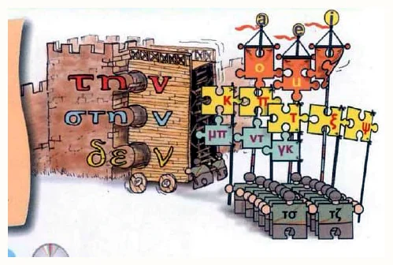
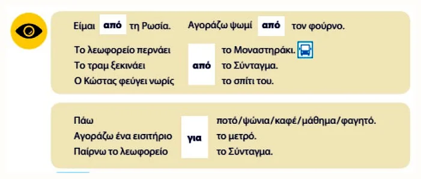
07
Где и куда
Движение и транспорт
σε / στον / στην / στο обозначает направление или место. με — способ передвижения. С некоторыми глаголами места предлог не нужен.
Πηγαίνω и πάω: оба могут означать «идти / ехать» и в живой речи часто взаимозаменяемы. Πηγαίνω чаще подчёркивает процесс или регулярное движение: Κάθε μέρα πηγαίνω στη δουλειά — «Каждый день я хожу на работу». Короткое πάω — обычный разговорный вариант, особенно с конкретной целью или направлением: Τώρα πάω στο σπίτι — «Сейчас я иду домой». Это подсказка по употреблению, а не жёсткое правило.
Πάω στο κέντρο με το λεωφορείο.Я еду в центр на автобусе.
Μένω στην Αθήνα.Я живу в Афинах — без σε после μένω.
Γυρίζω στο σπίτι.Я возвращаюсь домой.
Ταξιδεύω με το αεροπλάνο.Я путешествую на самолёте.
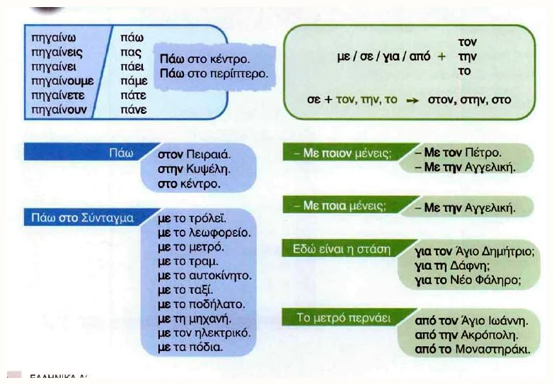
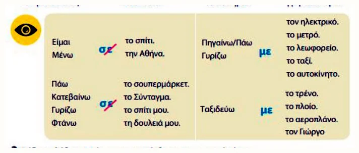
08
Когда
Дни недели, месяцы и погода
Когда говорим «в понедельник» или «в январе», используется винительный падеж без предлога: τη Δευτέρα, τον Ιανουάριο. Для регулярного действия добавляется κάθε.
Τη Δευτέρα πάω στη δουλειά.В понедельник я иду на работу.
Κάθε Κυριακή δεν δουλεύω.Каждое воскресенье я не работаю.
Τον Ιούλιο κάνει ζέστη.В июле жарко.
Τον χειμώνα κάνει κρύο.Зимой холодно.
Δευτέρα понедельникΤρίτη вторникΤετάρτη средаΠέμπτη четвергΠαρασκευή пятницаΣάββατο / Κυριακή суббота / воскресенье
ПримерΤι καιρό κάνει τον Απρίλιο; — Κάνει λίγο κρύο.Какая погода в апреле? — Немного холодно.
Погода: существительное и глагол
η βροχή — дождь
Βρέχει.Идёт дождь.
το χιόνι — снег
Χιονίζει.Идёт снег.
ο καύσωνας — волна жары
Έχει καύσωνα.Стоит сильная жара.
Βρέχει и χιονίζει — безличные погодные глаголы: в обычной речи используется форма третьего лица единственного числа. Πότε; спрашивает «когда?», όταν связывает части предложения: Κάνω μπάνιο όταν κάνει ζέστη.
Месяцы и дни недели добавлены как два отдельных раздела и два отдельных теста.
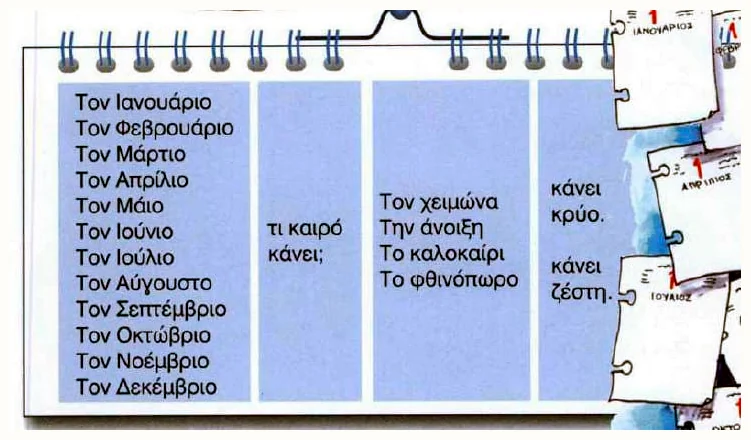
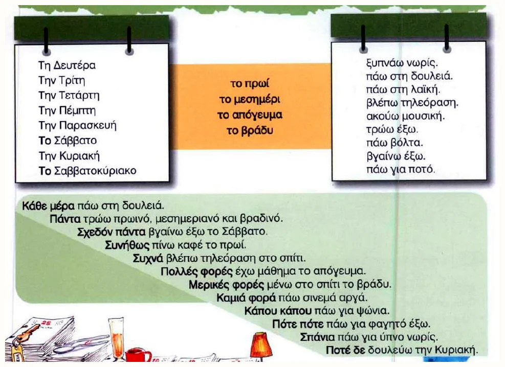
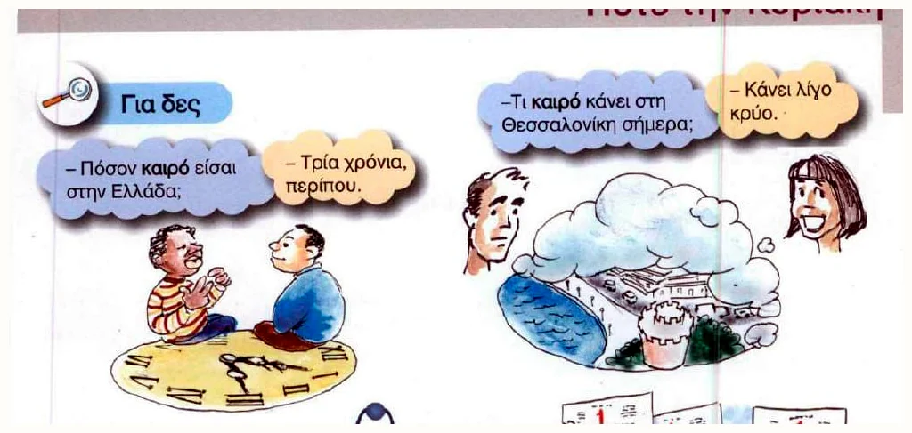
09
Количество
Числа от 100
Сотни согласуются с существительным: διακόσιοι люди, διακόσιες страницы, διακόσια евро. Для простого счёта обычно используется средний род.
100 εκατό200 διακόσια300 τριακόσια400 τετρακόσια500 πεντακόσια1000 χίλια
ПримерΤο εισιτήριο κοστίζει εκατόν δύο ευρώ.Билет стоит 102 евро.
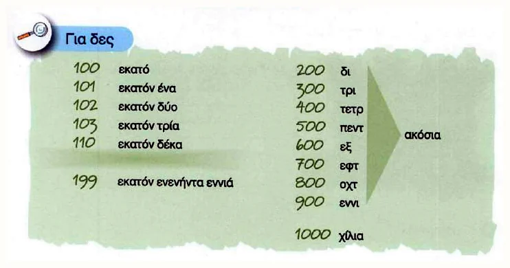
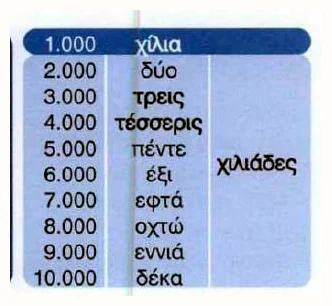
10
Когда и как долго
Время, διάρκεια и έως
Для точного времени: στη μία, но στις δύο / τρεις…. Чтобы спросить о продолжительности, используйте Πόσο καιρό;.
Είναι μία και τέταρτο.Четверть второго.
Είναι τρεις και μισή.Половина четвёртого.
Είναι τρεις παρά τέταρτο.Без четверти три.
Από τις εννέα έως τις δώδεκα.С девяти до двенадцати.
Приблизительное время
Περίπου στις οκτώ.Примерно в восемь.
Γύρω στις οκτώ.Около восьми.
Κατά τις οκτώ.Часов в восемь.
Από τις έξι μέχρι τις δέκα το βράδυ.С шести до десяти вечера.
Έξι και μισή — 6:30. Слитное εξίμισι чаще означает количество или длительность «шесть с половиной», а для показания часов безопаснее использовать έξι και μισή.
Как сказать «вот уже…»
εδώ και + период означает, что действие началось раньше и продолжается сейчас. В русском это «уже», «вот уже».
εδώ και — уже в течение
Εδώ και δύο χρόνια.Вот уже два года.
από — начиная с точки
Από το 2024.С 2024 года.
για — на срок / в течение
Για δύο εβδομάδες.На две недели.
Πόσο καιρό είσαι εδώ; — Εδώ και δύο χρόνια.Как давно ты здесь? — Вот уже два года.
Πόσο καιρό δουλεύεις εδώ; — Εδώ και έξι μήνες.Как долго ты здесь работаешь? — Уже шесть месяцев.
Μένω στην Κύπρο εδώ και έναν χρόνο.Я живу на Кипре уже год.
Μαθαίνω ελληνικά εδώ και τρεις μήνες.Я учу греческий уже три месяца.
Τον ξέρω από το 2023.Я знаю его с 2023 года.
Μένω στην Αθήνα για δύο εβδομάδες.Я остаюсь в Афинах на две недели.
ПроизнеситеΜαθαίνω ελληνικά εδώ και δύο χρόνια.Я учу греческий вот уже два года.
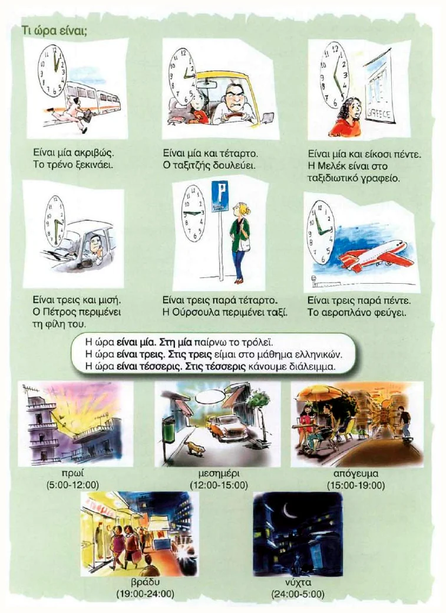
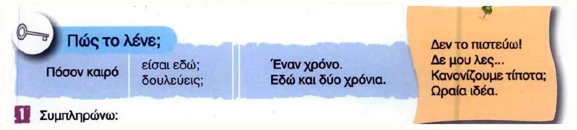
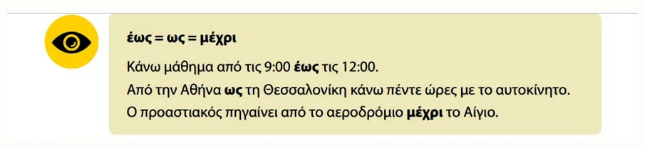
11
Регулярность
Как часто: от «каждый день» до «никогда»
Слова частотности обычно ставятся перед глаголом. Κάθε сочетается с существительным в единственном числе: κάθε μέρα, κάθε Κυριακή.
100%κάθε μέρα / πάντα каждый день / всегда
90%σχεδόν πάντα почти всегда
70%συνήθως обычно
50%συχνά / πολλές φορές часто / много раз
30%μερικές φορές / καμιά φορά иногда
10%σπάνια редко
0%ποτέ δεν никогда не
Важно: по-гречески отрицание двойное: ποτέ δεν. Нельзя сказать только ποτέ δουλεύω; правильно: ποτέ δεν δουλεύω.
Κάθε μέρα πάω στη δουλειά.Каждый день я хожу на работу.
Πάντα τρώω πρωινό.Я всегда завтракаю.
Συνήθως πίνω καφέ το πρωί.Обычно я пью кофе утром.
Συχνά βλέπω τηλεόραση το βράδυ.Я часто смотрю телевизор вечером.
Μερικές φορές μένω στο σπίτι.Иногда я остаюсь дома.
Κάπου κάπου πάω για ψώνια.Время от времени я хожу за покупками.
Σπάνια πάω για ύπνο νωρίς.Я редко ложусь спать рано.
Ποτέ δεν δουλεύω την Κυριακή.Я никогда не работаю в воскресенье.
ПроизнеситеΜερικές φορές βγαίνω, αλλά συνήθως μένω στο σπίτι.Иногда я выхожу, но обычно остаюсь дома.
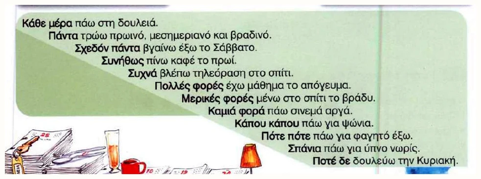
12
Разговор
Приветствие и настроение
С друзьями: Τι κάνεις;. Вежливо или к нескольким людям: Τι κάνετε;. Ответ может быть коротким — глагол повторять не нужно.
Τι νέα; — Μια χαρά.Что нового? — Отлично.
Πώς πάει; — Έτσι κι έτσι.Как дела? — Так себе.
Τι γίνεται; — Τα ίδια.Как оно? — Всё по-старому.
Όχι και τόσο καλά.Не очень хорошо.
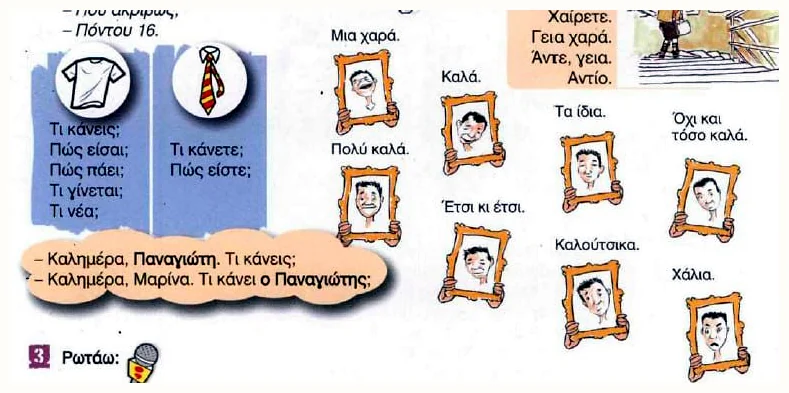
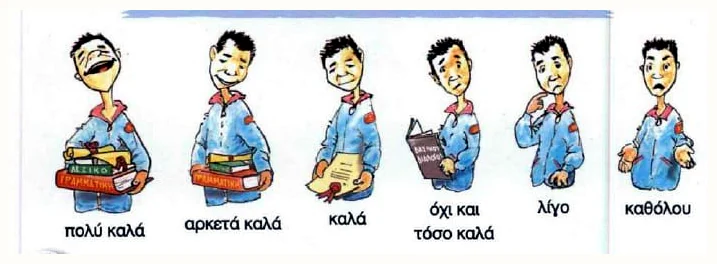
13
Тематический словарь
Профессии
После είμαι профессия обычно употребляется без артикля. У многих названий есть отдельные мужская и женская формы.
ДиалогΤι δουλειά κάνεις; — Είμαι μηχανικός.Кем ты работаешь? — Я инженер.
καθηγητής / καθηγήτριαγιατρόςοδηγόςμηχανικόςσερβιτόρος / σερβιτόραδάσκαλος / δασκάλαμάγειρας / μαγείρισσα
Все 21 профессия добавлены в отдельный раздел и тест.
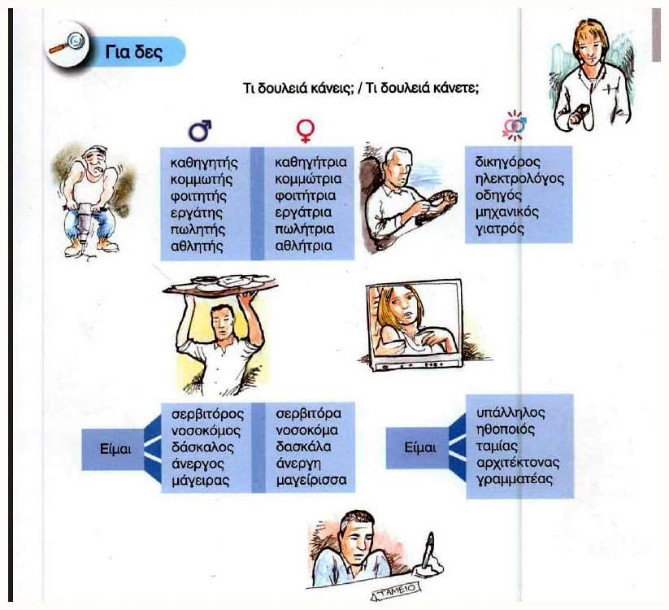
14
Тематический словарь
Национальности и языки
Национальность согласуется с полом человека. Название языка обычно среднего рода во множественном числе и употребляется без артикля после μιλάω.
Είμαι Ρώσος / Ρωσίδα.Я русский / русская.
Είμαι από τη Ρωσία.Я из России.
Μιλάω ρωσικά και ελληνικά.Я говорю по-русски и по-гречески.
ДиалогΑπό πού είσαι; — Είμαι από την Ισπανία.
15 национальностей добавлены в отдельный раздел и тест.
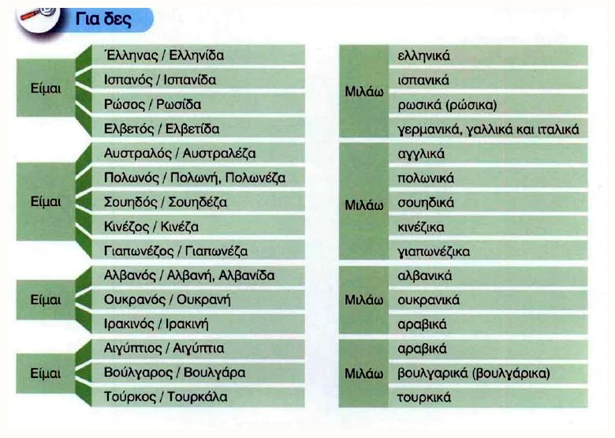
15
Одна черточка меняет смысл
Πού или που, πώς или πως
Вопросительные слова πού «где / куда?» и πώς «как?» пишутся с ударением. Оно сохраняется и в косвенном вопросе, даже если вопросительного знака нет.
πού — где? куда?
Πού μένεις;Где ты живёшь?
Ξέρω πού μένεις.Я знаю, где ты живёшь — косвенный вопрос.
που — который / что
Το σπίτι που βλέπω.Дом, который я вижу.
Χαίρομαι που είσαι εδώ.Я рад, что ты здесь.
πώς — как?
Πώς σε λένε;Как тебя зовут?
Ξέρω πώς γίνεται.Я знаю, как это делается.
πως — что
Νομίζω πως έχει δίκιο.Я думаю, что он / она прав(а).
Другие похожие пары
πότε — когда?Πότε φεύγεις; — Когда ты уезжаешь?ποτέ — никогдаΠοτέ δεν αργώ. — Я никогда не опаздываю.ή — илиΚαφέ ή τσάι; — Кофе или чай?η — артикль «эта / женщина»η αδελφή — сестраότι — чтоΞέρω ότι έρχεται. — Я знаю, что он идёт.ό,τι — всё, что / что бы ниΠάρε ό,τι θέλεις. — Возьми всё, что хочешь.
Важно: в обычном союзе που / πως ударения нет. В прямом или косвенном вопросе пишем πού / πώς.
Как узнавать семьи слов
παν- + επιστήμη → πανεπιστήμιοвсе науки → университет
δια- + δίκτυο → διαδίκτυοчерез сеть → интернет
υπολογίζω → υπολογιστήςвычислять → компьютер
τραγουδάω → τραγούδι → τραγουδιστήςпеть → песня → певец
αρχίζω → αρχή · τελειώνω → τέλοςначинать → начало · заканчивать → конец
ПроизнеситеΞέρω πού μένεις και πώς πηγαίνεις στη δουλειά.Я знаю, где ты живёшь и как добираешься на работу.